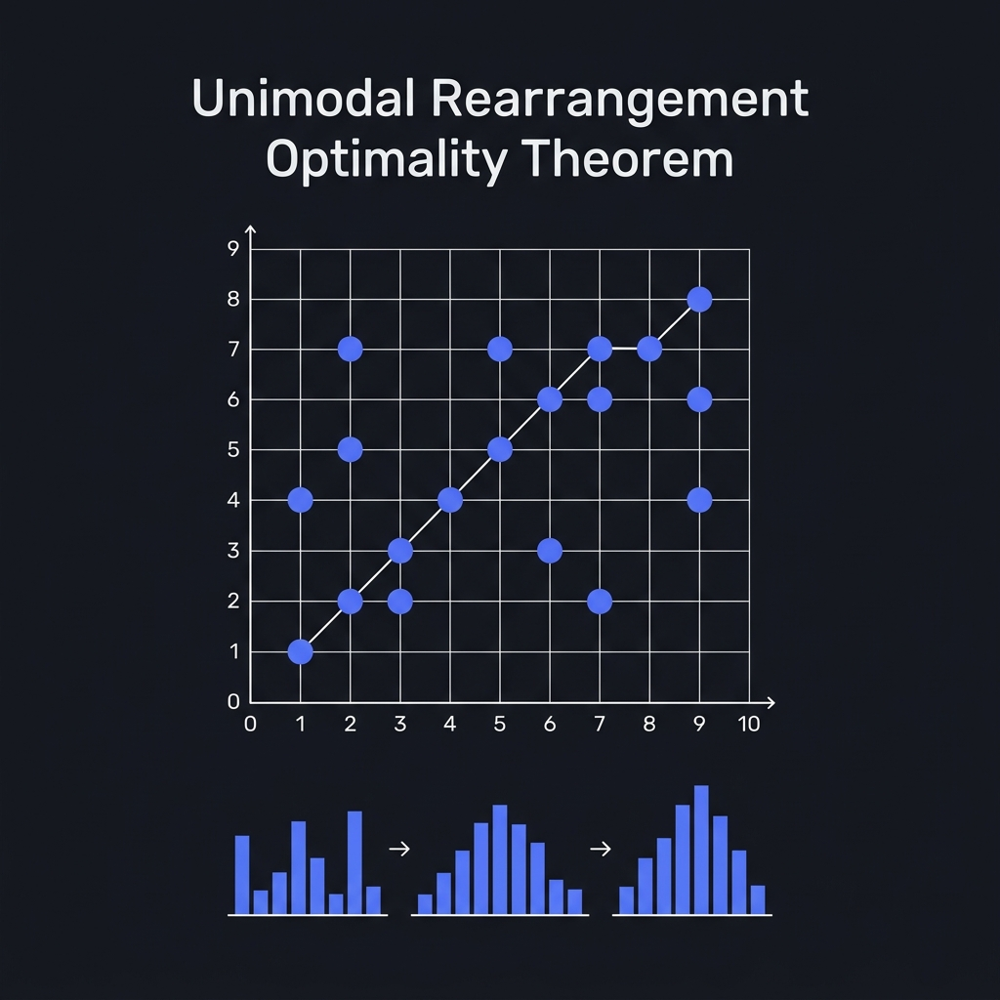

Unimodal Rearrangement Optimality

Mathematical Exposition
A sequence of numbers is unimodal if it is strictly increasing to a peak and then strictly decreasing. In formal settings, we define a unimodal array $x$ as one that can be partitioned into two parts: an increasing prefix $b$ and a decreasing suffix $b'$:
$$ x = b \mathbin{+\mkern-10mu+} b' \quad \text{where} \quad \text{Pairwise}(<, b) \;\land\; \text{Pairwise}(>, b') $$Given an arbitrary permutation $\sigma$ of $[1, \dots, n]$, we wish to find a unimodal permutation $u$ of $[1, \dots, n]$ that minimizes the Hamming distance (number of differences) from $\sigma$:
$$ d_H(u, \sigma) = \#\{ i \in \{0, \dots, n-1\} \mid u[i] \neq \sigma[i] \} $$The Unimodal Rearrangement Optimality Theorem states that an efficient $O(n \log n)$ algorithm, denoted $\text{minRearrange}(\sigma)$, computes this minimum distance exactly, and that the optimal distance is given by $n - \text{LIS}$ on a special 2D projection of the permutation elements.
Algorithm & Projection Strategy
The core of the algorithm maps each index-value pair $(i, \sigma[i])$ to a 2D coordinate grid. Let $a = \sigma[i]$. We define a set of points $V$ in $\mathbb{R}^2$ containing:
- Increasing candidates: If $i + 1 \le a$, we map to point $(2i + 1, 2(a - i - 1))$. This corresponds to placing the value $a$ on the increasing side of the peak.
- Decreasing candidates: If $n \le a + i$, we map to point $(2(a + i - n), 2(n - i) - 1)$. This corresponds to placing the value $a$ on the decreasing side of the peak.
We then sort these points lexicographically by $X$ coordinates, and find the Longest Increasing Subsequence (LIS) on the $Y$ coordinates. The points selected in the LIS represent elements that can remain unchanged. The remaining positions are filled in a way that preserves the unimodal property. The minimum differences required is thus $n - |LIS|$.
Proof Overview
The formal proof, completed in Lean 4 without using any sorry, comprises ~3,900 lines of code. It establishes two main directions:
- Existence: Constructing a concrete unimodal permutation $x$ using a custom filling algorithm that achieves exactly $n - |LIS|$ differences.
- Optimality: Proving that no unimodal permutation can have a smaller Hamming distance. This is done by showing that any subset of elements where the unimodal permutation matches $\sigma$ must map to a chain in the 2D projected space that is mutually non-decreasing, and therefore its size is bounded by the length of the LIS.
import Mathlib
/-- Property stating that the array can be decomposed into a strictly increasing and a strictly
decreasing part. -/
def Unimodal (arr : Array Nat) : Prop :=
∃ b b', arr = b ++ b' ∧ b.toList.Pairwise (· < ·) ∧ b'.toList.Pairwise (· > ·)
/-- The number of indices at which the two given vectors differ. -/
def differences {n : Nat} (a b : Vector Nat n) : Nat :=
(List.finRange n).filter (fun i => a[i] ≠ b[i]) |>.length
/-- An O(n log n) algorithm that computes the minimum number of swaps/modifications
needed to make an array of size n (which is a permutation of [1..n]) unimodal. -/
def minRearrange (arr : Array Nat) : Nat :=
let n := arr.size
let v :=
(arr.zipIdx.filter (fun (a, i) => i + 1 ≤ a)).map (fun (a, i) => (2 * i + 1, 2 * (a - i - 1))) ++
(arr.zipIdx.filter (fun (a, i) => n ≤ a + i)).map (fun (a, i) => (2 * (a + i - n), 2 * (n - i) - 1))
let vv := (v.toList.mergeSort (le := fun a b => a = b ∨ Prod.Lex (· < ·) (· < ·) a b)).toArray
n - lis (vv.map (·.2))
where
lis (arr : Array Nat) : Nat :=
if h : arr = #[] then
0
else
let dp := Array.replicate arr.size (arr.max h + 1)
loop arr 0 0 dp (by grind)
loop (arr : Array Nat) (ans i : Nat) (dp : Array Nat) (hi : i ≤ arr.size) : Nat :=
if hi' : i = arr.size then
ans
else
let pos := upperBound arr[i] dp
loop arr (max ans (pos + 1)) (i + 1) (dp.set! pos (arr[i])) (by grind)
upperBound (needle : Nat) (arr : Array Nat) : Nat :=
go needle arr 0 arr.size
go (needle : Nat) (arr : Array Nat) (lo hi : Nat) (hhi : hi ≤ arr.size := by omega) : Nat :=
if h : lo < hi then
let mid := lo + (hi - lo) / 2
if arr[mid] ≤ needle then
go needle arr (mid + 1) hi
else
go needle arr lo mid
else lo
/-- **Unimodal Rearrangement Optimality Theorem.**
For any permutation `arr` of `[1..n]`, the `minRearrange` algorithm computes exactly
the minimum Hamming distance (differences) from `arr` to any unimodal permutation. -/
theorem minRearrange_correct {arr : Array Nat} :
arr.Perm (1...=arr.size).toArray →
(∃ (x : Array Nat) (hx : x.Perm (1...=arr.size).toArray),
Unimodal x ∧ differences (Vector.mk x (by simpa using hx.size_eq)) arr.toVector = minRearrange arr) ∧
(∀ (x : Array Nat) (hx : x.Perm (1...=arr.size).toArray),
Unimodal x → minRearrange arr ≤ differences (Vector.mk x (by simpa using hx.size_eq)) arr.toVector)